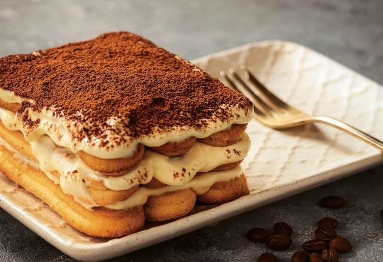

Італійська кухня є однією із найпопулярніших кухонь світу. Таку популярність вона здобула завдяки різноманітності і неповторності страв. В Італії деякі страви можуть готуватись не лише в окремому регіоні, а й тільки в одному населеному пункті. Неповторності стравам італійської кухні додають високоякісні продукти і різноманітні додатки, серед яких велике значення мають овочі та трави. В італійській кухні, типовій кухні з регіону Середземного моря, царюють одноосібно овочі, а їх царем є помідор. Вокористовується він в італійській кухні в усіх видах. Помідор використовується як цілий, так і у вигляді соку чи пасти. Помідори в італійській кухні готують у копченому, маринованому і сушеному вигляді, а також на грилі.
Овочі по-італійськи
Італійська кухня смакує по-королівськи! А ще в приготуванні італійських страв використовують багато овочів з корисними властивостями. В італійській кухні приготування овочів відбувається без використання води і борошна. Готуються вони на парі до того ж дуже швидко. Більше того, цікавим є те, що єдиною прийнятною приправою є сіль. Як замінник іншим приправам, італійці додають свіжу зелень, трюфель або сир пармезан.
Венеція
Венеціанська Республіка була в середньовіччі могутньою державою та важливим торговим центром. Вже тоді в кулінарних рецептах з'явилися екзотичні на той час східні прянощі: імбир, шафран, кмин, кориця та мускатний горіх. Лише в часи воєн Наполеона їх почали доповнювати травами. У венеціанській кухні популярні риба та морепродукти. На деякі страви, як наприклад, pesce in saor, дуже вплинула арабська кухня, характерною рисою якої є поєднання смаків – кислого та солодкого. Чим далі від моря, тим більше в кухні використовується м'ясо – особливо дичина та птиця (але не тільки). До найвідоміших страв відноситься дика качка з пряним анчоусним соусом, а також теляча печінка «по-венеціанськи» з полентою, що має австрійське коріння (Венеція була під австрійським пануванням після Віденського конгресу). Інший венеціанський м'ясний делікатес – це тоненькі скибочки сирої яловичої вирізки, які збризкують маринадом з майонезу, лимонного соку, соусу Ворчестер, молока, солі та білого перцю. Більшою популярністю, ніж макарони, у цьому регіоні користується різотто. Якщо його готують із додаванням чорнила каракатиці, воно називається різотто неро. Важливу роль відіграє також полента, яку колись їли на сніданок, обід і вечерю.
Мілан

Мілан – столиця Ломбардії, багатого району північної Італії. Хоча зараз це вже не сільськогосподарський регіон, Ломбардія, як і раніше, славиться чудовим рисом. Його обробляють із XV століття. Завдяки сарацинам рис спочатку з'явився в Іспанії, а звідти арагонські правителі привезли його в Ломбардію. Традиційна страва – це різотто «по-міланськи» (risotto alla milanese), що подають із шафраном. Знаменита також паста з начинкою, зокрема равіолі й ангелоті з гарбузом. До делікатесів відносять м'ясні страви, приготовані у вині, різні види салямі, а також жаб'ячі лапки. Наприкінці трапези замість десерту часто подають сири: горгонзола (gorgonzola), маскарпоне (mascarpone) й грана падано (grana padano). Але це аж ніяк не означає, що Ломбардія не славиться смачними десертами – наприклад, тірамісу роблять саме з сиру маскарпоне. Гордістю цього регіону є солодка випічка, особливо панеттоне (panettone) – дріжджове тісто, а також «пасхальний голуб» (colomba pasquale) – паска, яку випікають у формі голубки. Ломбардія є батьківщиною відомих лікерів Амаретто та Кампарі.
Рим

До періоду великих завоювань кулінарна культура людей, що живуть над рікою Тибр, була досить скромною. Це змінилося разом із запозиченою з Греції традицією посиденьок. Часто бенкет перетворювався у звичайну пиятику, оскільки римляни, на відміну від греків, не мали звички розбавляти вино. Меню вибирали з думкою про престиж. Цінувалося використання дорогих приправ і складні способи приготування страв. Вершиною досконалості кулінарного мистецтва вважалися так звані «фальшиві страви», наприклад, приготування телятини таким чином, щоб вона мала смак тріски. У Стародавньому Римі через небезпеку пожеж було заборонено готувати вдома їжу на вогні. Можливо тому навіть сьогодні римляни набагато охочіше, ніж жителі інших регіонів Італії, відвідують ресторани. Крім того, Рим – це місто кафе, тратторій і піцерій, у яких споконвіків підкріплюються прочани й туристи, що відвідують столицю західного християнства. Перед головною стравою (найчастіше це паста) подають холодні закуски – антіпасті. Вибір величезний: пармська шинка, баклажани в оливковій олії, запечена паприка, шматочки кабачків або сушені помідори в олії, оливи чи цибулинки в оцті, салямі, біла квасоля в оцті й олії, грінки з каперсами чи часником, хліб із часником, олією та травами.
Італійська кава
Улюблений напій італійців – кава, адже кавоварку винайшли саме римляни. Італійці починають день із філіжанки капучино, назва якого походить від горіхового кольору ряси монахів капуцинів. Протягом дня п'ють міцну маленьку порцію еспрессо з великою кількістю цукру.
Парма
Кухня регіону Емілія - Романія, в якому розміщується Парма, багата делікатесами. Найбільш знамениті – це пармська шинка й пармезан. Даний регіон славиться також найякіснішим у світі бальзамічним оцтом, Aceto Balsamiсo Tradizionale, який виготовляють усього лише декілька виробників. Prosciutto Di Parma, пармську шинку, готують із незвичайним старанням і турботою. Весь виробничий процес контролює спеціальний консорціум, що забезпечує дотримання всіх вимог, що строго визначають породу свиней, спосіб їхньої годівлі та сам виробничий процес. Справжня пармська шинка як слід просолена, дозріває від 10 до 12 місяців у холодному приміщенні. Вона може дозрівати набагато довше й тоді здобуває ще ніжніший і тонший смак. Не менш відомий сир пармезан – Parmigiano Reggiano. Його назва походить від назв міст Парма й Реджио, де його почали виготовляти вже в XIII столітті. Назва Пармезан використовується лише для сиру, виробленого в декількох провінціях: Парма, Реджио Емілія, Модена, Мантуа, а таокж Болонья. Молоко повинно бути від корів, які їдять тільки свіжу траву на пасовищах. Пармезан дозріває від 10 до 36 місяців, залежно від часу дозрівання виходить молодий (fresco), середній (vecchio) або старий пармезан (stravecchio). Кожен з них має своє застосування. Молодий використовується як столовий сир, а старий додають у страви з макаронів і рису, у салати, супи та соуси.
Натуральний бальзамічний оцет Aceto Balsamico, бальзамічний оцет, виробляється природним способом. Свіжий муст варять на повільному вогні, а потім залишають для ферментації в дерев'яних діжах. Процес ферментації закінчується після 3 років, однак, для доброго бальзамічного оцту необхідно щонайменше 12 років, а після 30 чи навіть 50 він стає ще кращим.